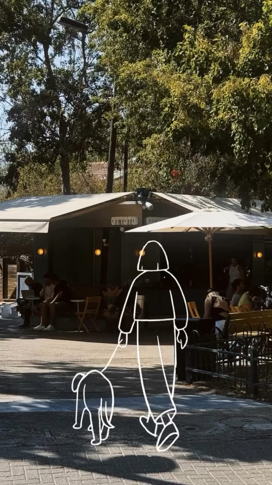
OTTOTO, קפה ויין ברמת אביב
The Vibe
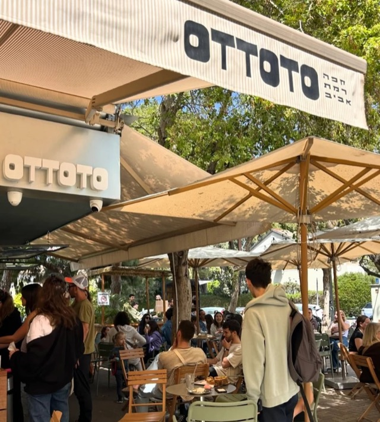
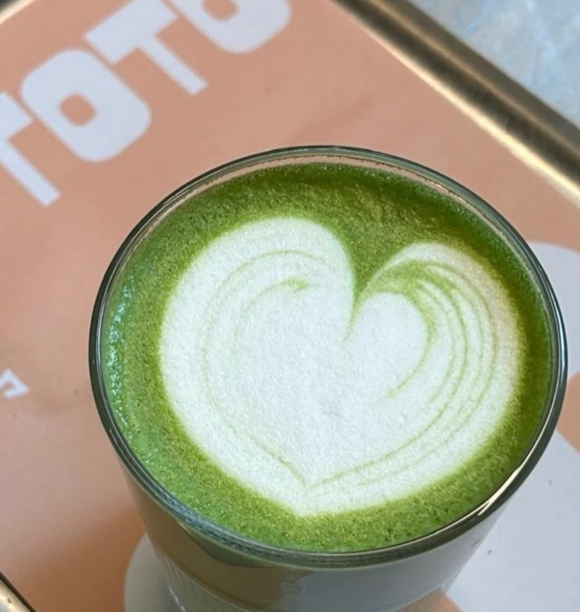
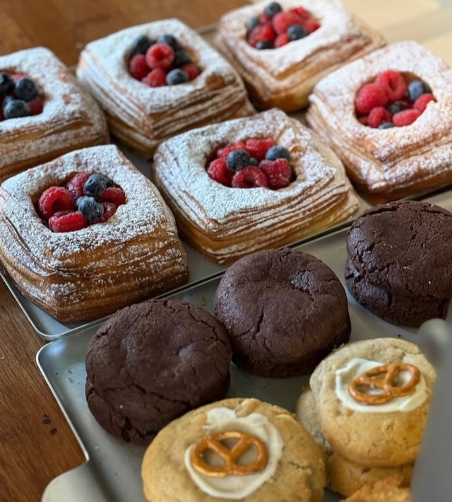
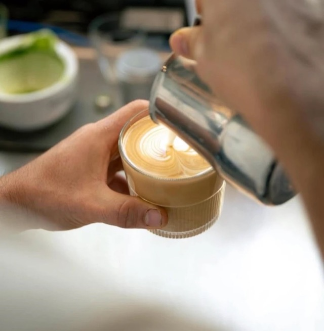
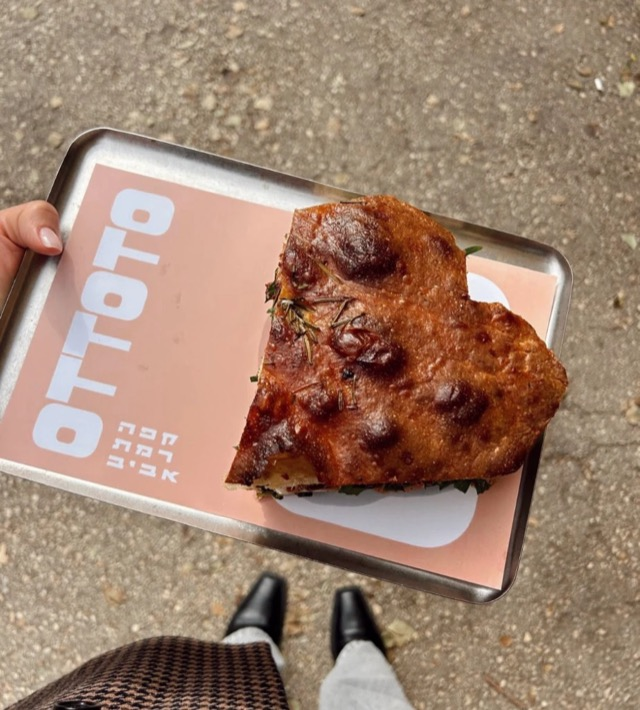
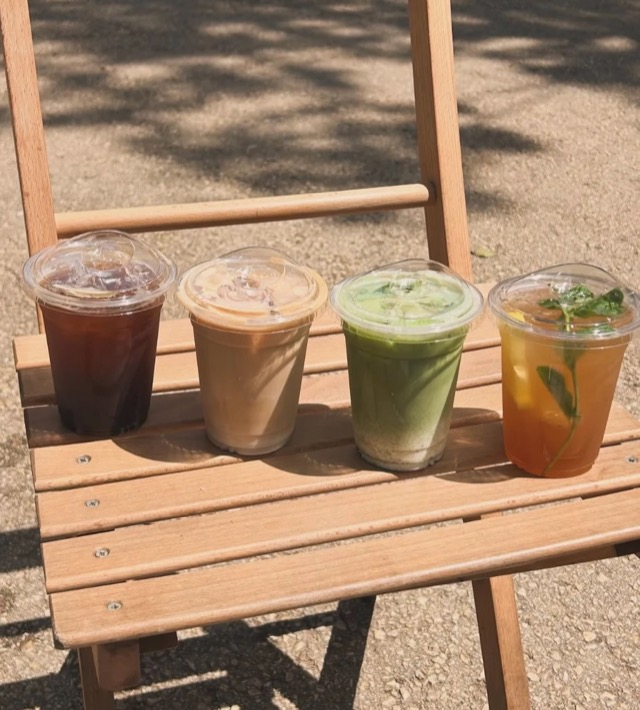
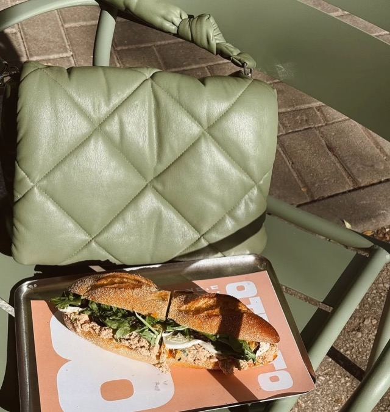
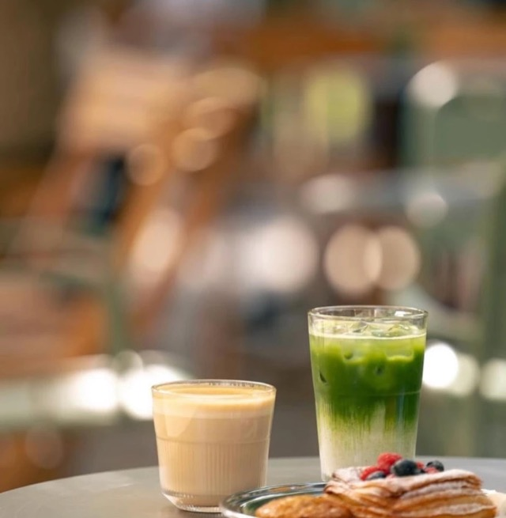
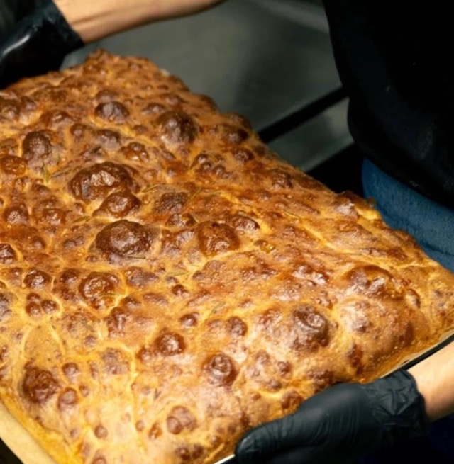
Friends Club
מועדון הלקוחות של אוטוטו. כרטיסייה, חותמות, ומה שמגיע אחריהן.
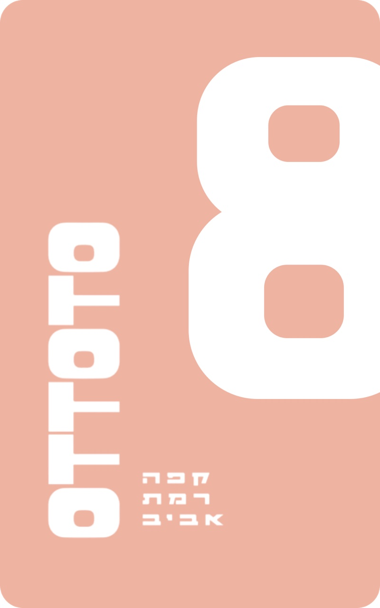
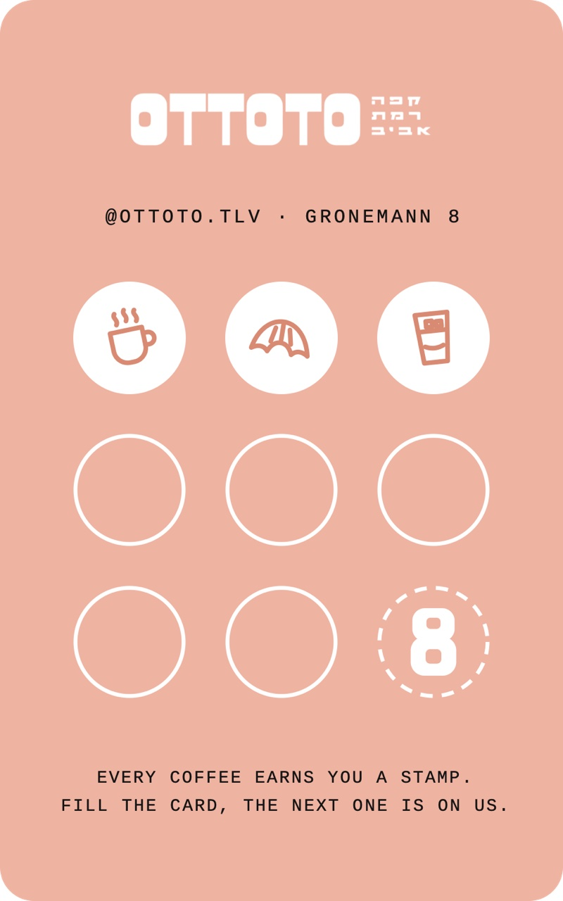
HI!Come visit us
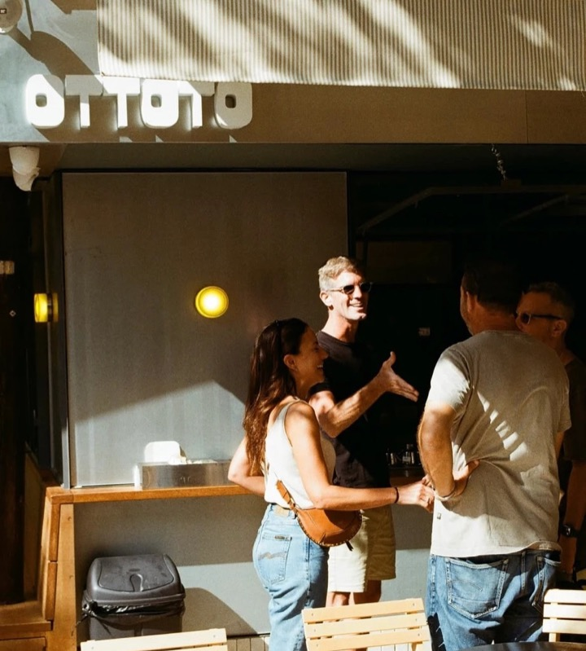
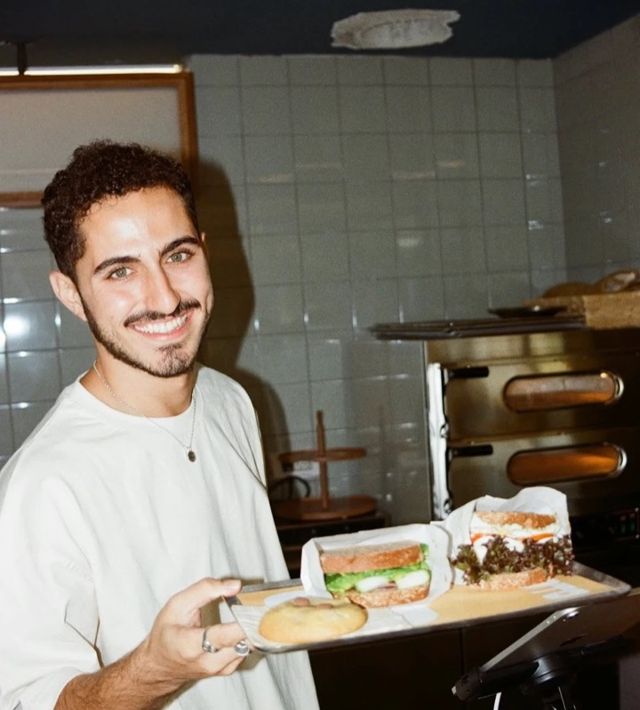
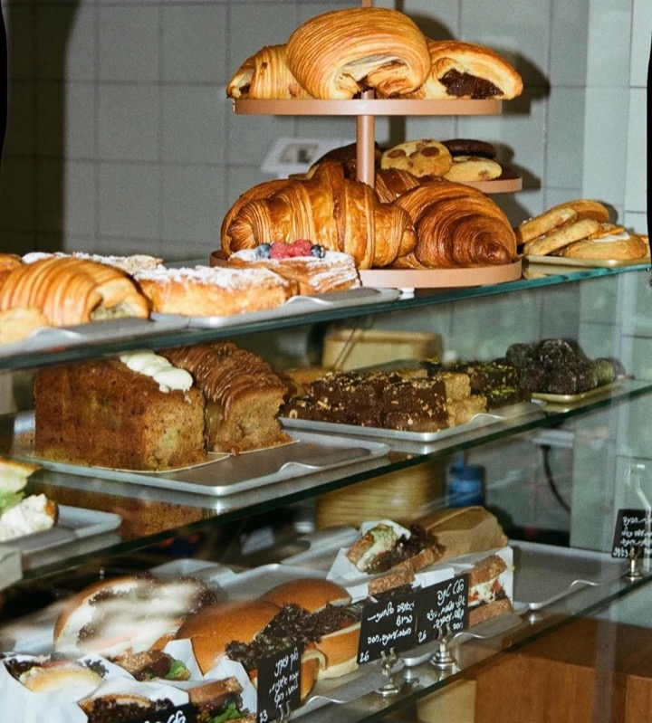
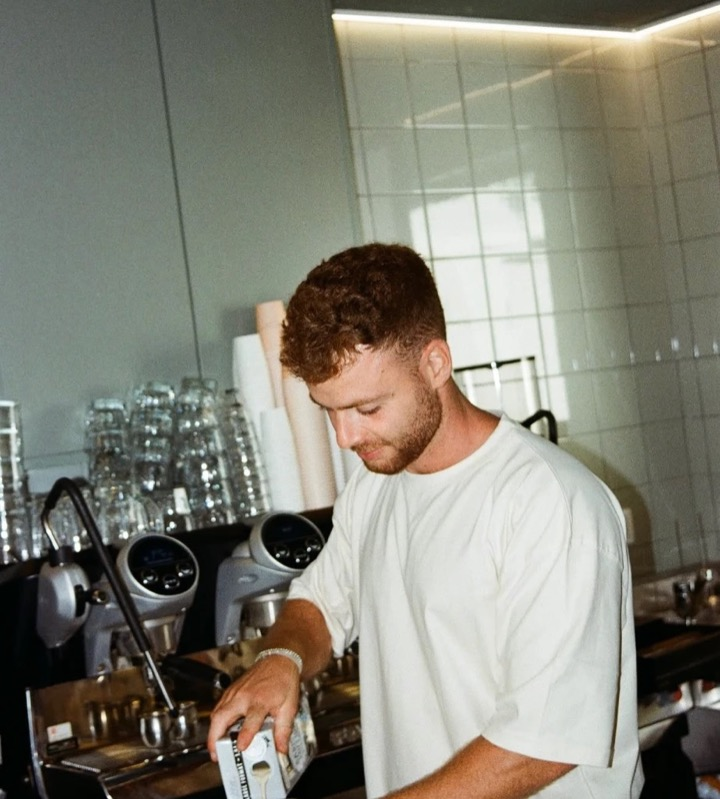
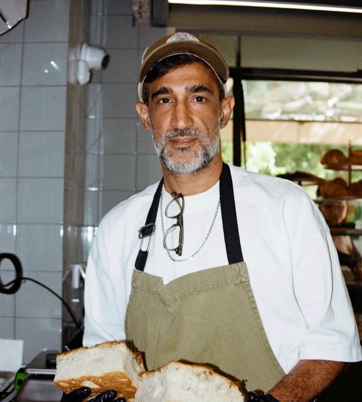
GRONEMANN 8, TEL AVIV
א׳-ה׳07:30 - 20:00
שישי07:30 - 15:30
שבת08:30 - 20:00